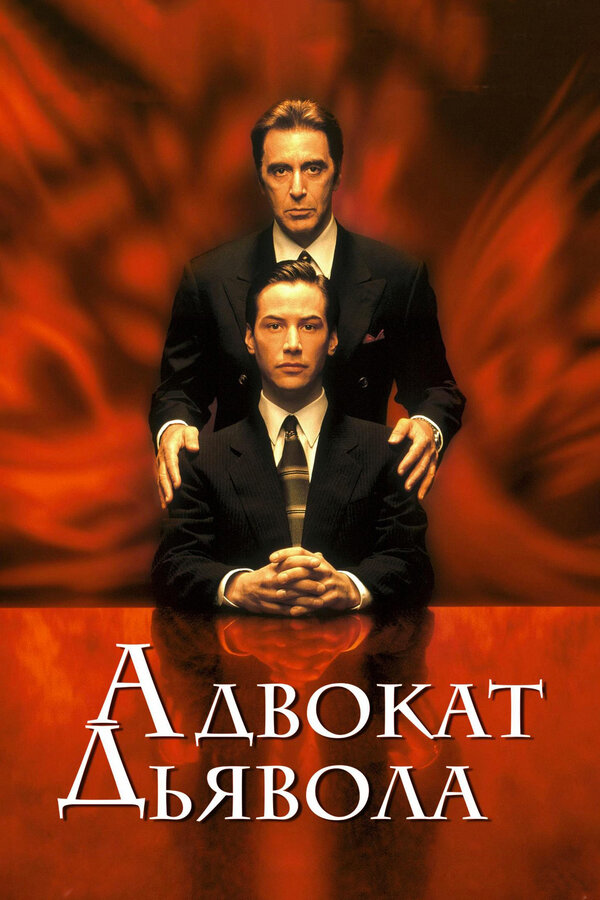
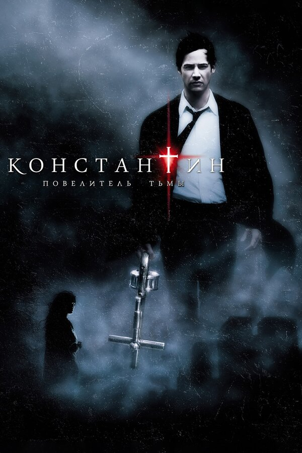

Жизнь Томаса Андерсона разделена на две части:
днём он — самый обычный офисный работник, получающий нагоняи от начальства,
а ночью превращается в хакера по имени Нео,
и нет места в сети, куда он бы не смог проникнуть.
Но однажды всё меняется.
Томас узнаёт ужасающую правду о реальности.

Адвокат дьявола
В Нью-Йорк по приглашению главы крупного юридического концерна прибывает Кевин Ломакс,
молодой адвокат. До этого он был известен тем,
что защищал исключительно негодяев и притом не проиграл ни одного процесса.
На новом месте работы он вполне счастлив,
он живет в роскошной квартире с любящей женой, его окружают интересные люди.

Константин: Повелитель тьмы
Джону Константину удалось не только побывать в аду, но и вернуться обратно.
Родившись с неугодным самому себе талантом — способностью распознавать помесь ангелов и демонов,
которые бродят по земле в облике людей, —
Константин под давлением обстоятельств пытается совершить самоубийство,
лишь бы избавиться от мучительных видений. Но неудачно.
Воскрешенный против собственной воли он снова оказывается в мире живых.
Теперь, отмеченный печатью суицида и получивший временное право на жизнь,
он патрулирует границу, разделяющую рай и ад,
тщетно надеясь на обретение спасения путем сражения с земными ставленниками зла.
Киану Ривз
Канадский актёр, продюсер, музыкант (бас-гитарист).
Полное имя — Киану Чарльз.
Родился 2 сентября 1964 года в Бейруте, Ливан.
Отец актера — наполовину китаец, наполовину гаваец из состоятельной семьи, геолог по профессии, познакомился
со своей будущей женой Патрисией, английской актрисой варьете, когда проводил отпуск в Ливане, чем и
объясняется столь экзотическое место рождения Киану Ривза. Имя Киану означает на языке племени, проживающего
на Гавайских островах, "прохладный горный ветер". Отец оставил семью, когда мальчику было шесть лет, и с тех
пор почти не виделся с сыном.
После развода Патрисия с детьми через Австралию и Нью-Йорк добралась до Канады. Киану Ривз до сих пор
сохраняет канадское гражданство. В начальную школу и четыре средних класса, включая школу исполнительского
искусства, Киану Ривз ходил в Торонто. Его всегда больше интересовал театр или хоккей, нежели собственно
учеба, и в 17 лет его исключили за плохое поведение и неуспеваемость.
Расставшись со школой, некоторое время подрабатывал разными способами (заточкой коньков, подрезкой
деревьев), и в 1984 году наконец дебютировал на сцене в спектакле «Мальчике-волчонке», который стала в
Торонто популярным. Последовало несколько крупных работ на телевидении. На него обратили внимание, и с 1986
года актер начинает сниматься в кино, причем получает сразу несколько ролей, одна из которых — в драме о
хоккеистах «Молодая кровь».
Ривза идолом молодежи сделал фильм «Невероятные приключения Билла и Теда», где ему удалось точно
воспроизвести подростковую ментальность паренька, готового пуститься в путешествие во времени лишь бы сдать
экзамен по истории. Созданный им образ очередного пустоголового подростка оказался столь удачным, что Киану
Ривза начали отождествлять именно с таким типажом.
В 1988 год играет молодого энергичного учителя музыки Даней в «Опасных связях». Картина Гаса Ван Сента «Мой
собственный штат Айдахо» (1991) современная фантазия на шекспировские темы, стала актёрским триумфом Ривза.
Киану Ривз и Ривер Феникс превратили картину в культовый фильм, пользовавшийся неожиданно большим кассовым
успехом.
По-настоящему популярность к актеру пришла в 1994 году после фильма «Скорость». Изобретательный, отважный
мускулистый Джек Трэвен сразу очаровал зрителей. Киану Ривз повзрослел и превратился из кумира тинэйджеров в
настоящую «звезду» фильмов действия. Посыпались новые предложения, суммы некоторых потенциальных контрактов
составляли семь миллионов долларов. Но погоня за деньгами никогда не была определяющим фактором для Киану,
и, руководствуясь художественным вкусом и всё тем же нежеланием повторяться, актёр отказался сниматься в
«Скорости II».
Известен как музыкант группы «Dogstar», где играет на бас-гитаре. Группа выпустила несколько компакт-дисков
и постоянно дает концерты не только на территории США и Канады, но и по всему миру.